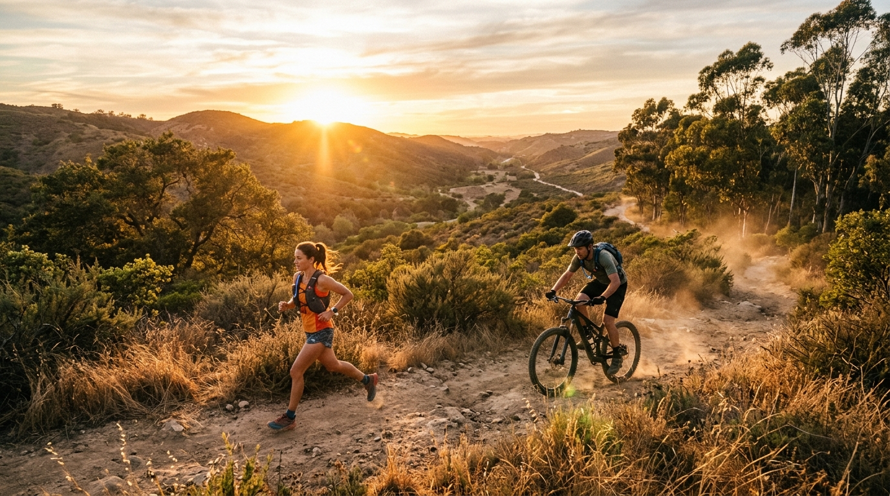
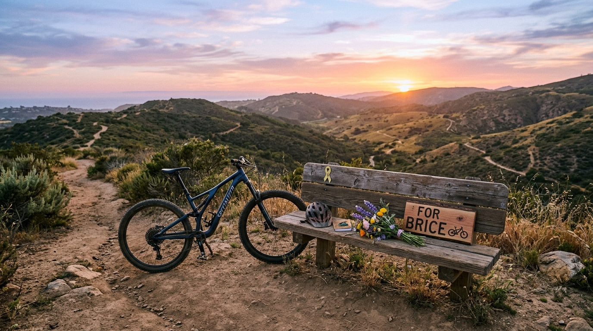
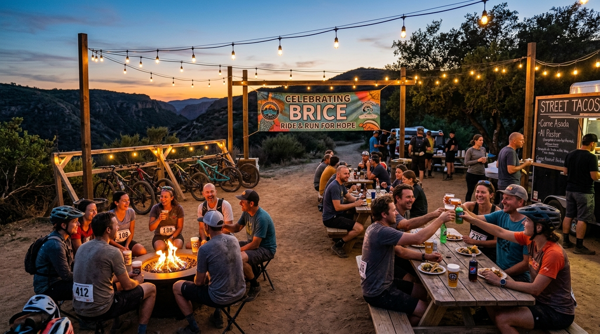

100 Miles. Two Disciplines.
One Promise to Brice.
A one-of-a-kind 100-mile endurance showdown pitting Ultra Trail Runners against Mountain Bikers across separate race days in San Diego's legendary PQ Canyon. We made Brice a sacred promise: if depression ever took his life, we’d throw the most relentless, joyous race party in his honor.

I told him: if you ever leave us, we’re not going to sit around in quiet sorrow. We’re going to throw the biggest, wildest race party this canyon has ever seen. Without you—but forever in your name.
A Ride for Brice. A Race for Every Soul Fighting in the Dark.
Brice Jernigan lived for dirt, velocity, and the open sky. If you spent any morning in San Diego’s Los Peñasquitos Canyon—weaving through the sycamore groves, tackling the cobblestone tunnels, or racing the sunset across the mesa—you probably crossed tracks with Brice.
Behind his radiant grin and unstoppable trail enthusiasm, Brice fought an exhausting, quiet war against clinical depression. Despite the love of family, friends, and the tight-knit San Diego cycling tribe, Brice lost his battle to suicide.
When he was alive, we made him a solemn, unshakeable pact: if that dark day ever came, we wouldn't let despair get the last word. We would gather every runner who ever laced up a shoe, every rider who ever clipped into a pedal, and rally them together for a hundred grueling, glorious miles.
This event is the fulfillment of that promise. 100% of race proceeds benefit suicide prevention organizations, funding local San Diego youth mental health outreach, crisis intervention hotlines, and removing the shame of asking for help.
Ending the Silence
Breaking the stigma surrounding mental illness and male depression through raw honesty and community fellowship.
Funding 24/7 Crisis Help
Every mile sponsors operator training and emergency mental health care through the 988 Lifeline and San Diego crisis networks.
The Big Race Party
Honoring Brice exactly how he wanted: dirt on our faces, tacos on our plates, cold beers raised to the sky, and love in our hearts.
The Showdown: Runners vs. Mountain Bikers
They race on separate days to ensure trail safety and peak conditions. But can a 100-mile ultra runner beat a mountain biker? With our official Brice Handicap Index, the showdown is on.
The "Brice Index"
Opt-in at registration to pit your time head-to-head. An algorithmic handicap calibrates terrain velocity so runners and riders compete for the coveted Dual-Crown Memorial Trophy.
The "Brice Index" Showdown Calculator
How does your projected time stack up? Enter an MTB time or an Ultra Runner time to see who takes the virtual crown on the combined leaderboard.
RIDER TAKES THE CROWN
A 7h 30m MTB effort equivalent to a 16h 07m ultra run!
Simulated "Spoke vs. Tread" Top Standings
Based on 2.15x course terrain coefficient| Rank | Competitor | Discipline | Raw Time | Brice Index Score | Status |
|---|
The Los Peñasquitos Canyon 100 Course
Four loops of 25 miles through the iconic Los Peñasquitos Canyon Preserve, Del Mar Mesa, and Black Mountain. A brutal and breathtaking tapestry of singletrack, sycamore groves, shale climbs, and ocean breeze.
Canyon Floor & The Sycamore Canopy
Starting at Canyonside Community Park, competitors dive into the cool coastal air of lower Peñasquitos Canyon. Shaded oak and sycamore canopies provide smooth flow for bikes and steady rhythm for runners alongside Peñasquitos Creek.
Aid Stations on this Segment:

"Brice’s Big Race Party"
Brice didn't want solemn silence. He loved rowdy laughs, cold beer after a savage 40-mile ride, street tacos loaded with cilantro, and gathering around a campfire recounting near-crashes and epic trail milestones.
Baja Taco Trucks & Fresh Churros
Authentic San Diego carne asada, al pastor, birria, and fresh vegan street tacos included for all racers, volunteers, and supporters.
Local Craft Beer Garden
Proudly pouring pours from San Diego breweries with 100% of drink sales donated to suicide prevention and community mental health.
Live Music & Acoustic Campfire Jam
Local San Diego bands playing blues, rock, and bluegrass beneath the string lights until the final midnight cutoff runner crosses.
The Sunset Memorial Toast & Trail Bell
At 6:30 PM on Sunday evening, we pause to ring the canyon trail bell, toast Brice, and remind each other that nobody ever rides alone.
Everyone is welcome! Whether you run 100 miles, ride 100 miles, or just come to eat tacos, listen to music, and cheer on the athletes, admission is open to the entire San Diego community.
The $100,000 Suicide Prevention Mission
100 miles in the dirt. $100,000 for life-saving suicide prevention programs. Here is exactly where your registration fees, donations, and pledges go.
"Sponsor a Mile for Brice"
Dedicate one of the 100 miles to Brice or a loved one who fought with depression. Each mile is $100 and will have a custom wooden trail marker placed on course with your personal message.
The Brice Jernigan Tribute Wall
Leave a memory of Brice, a message to his family, or an encouraging note to anyone who is fighting depression right now.
Registration Categories
Every entry includes official timing, aid station nutrition, finisher belt buckle / sprocket medal, commemorative tech shirt, and entry to Brice's Big Race Party.
The 100-Mile MTB
Saturday, Oct 24 • 6:00 AM
- ✓ Solo or 2-Person Relay Option
- ✓ 14-Hour Cutoff & Full Course Support
- ✓ Handcrafted MTB Sprocket Finisher Medal
- ✓ Eligible for "Spoke vs Tread" Virtual Crown
- ✓ Brice's Big Race Party Ticket & Beer Pass
- ✓ $75 of entry goes straight to 988 charity
The 100-Mile Ultra
Sunday, Oct 25 • 5:00 AM
- ✓ 100-Mile Solo Footrace (Western States Qualifier)
- ✓ 30-Hour Cutoff with Pacer privileges from Mi 50
- ✓ Custom Cast "Brice 100" Belt Buckle
- ✓ Eligible for "Spoke vs Tread" Virtual Crown
- ✓ Brice's Big Race Party Ticket & Beer Pass
- ✓ $100 of entry goes straight to 988 charity
The "Ghost Rider" Challenge
Both Days • Oct 24 & 25
- ✓ MTB 100 Saturday + Run 50K Sunday
- ✓ Or Pair with a friend (1 Biker + 1 Runner team)
- ✓ Special Titanium Dual-Discipline Commemorative Award
- ✓ Double Swag Package & VIP Party Table
- ✓ Maximum charity impact for suicide prevention
Brice's Memorial 5K / 10K
Sunday, Oct 25 • 9:00 AM
- ✓ Accessible scenic trail walk/jog in PQ Canyon
- ✓ Family, kids, and strollers welcome on main path
- ✓ Memorial Pin & "Fight Depression" Wristband
- ✓ Full Access to Finish Line Party & Live Bands
- ✓ 100% of registration donated to charity
Frequently Asked Questions
Safety and trail integrity in Los Peñasquitos Canyon are our highest priorities. 100 miles of mountain biking on singletrack carries high speeds and braking zones that would endanger runners, while runners traversing blind corners would create hazard for riders. Running mountain bikes on Saturday and runners on Sunday allows each athlete to push their absolute limit in clean, safe conditions—while our calibrated handicap index lets you battle for the overall weekend crown.
The "Brice Index" uses a calibrated 2.15x course factor derived from historical mountain bike vs ultra marathon splits over the same 11,480-foot elevation profile in PQ Canyon. At registration, racers can opt-in to the cross-discipline showdown. Times are normalized in our live timing system to produce a unified leaderboard.
YES! Absolutely! That was the entire core of the promise we made to Brice. The party at Canyonside Park is free and open to everyone—friends, family, local San Diego residents, hikers, and advocates. Food trucks, beer garden, and live bands will be rocking from Saturday afternoon through Sunday night.
100% of net proceeds go directly to suicide prevention organizations. Our primary partner is the American Foundation for Suicide Prevention (San Diego Chapter), alongside local San Diego crisis response teams and the 988 Suicide & Crisis Lifeline crisis counselor training programs.
Yes. Ultra runners may have a designated safety pacer accompany them on foot from Mile 50 (start of Loop 3) until the finish line. Crew access is available at Canyonside Park main staging and Carson's Crossing aid station.
If you are struggling today, please stay.
Depression lies. It whispers that people would be better off without you, or that the pain will never end. Brice's passing left a hole in our hearts that can never be replaced. If you are hurting, talk to someone right now.